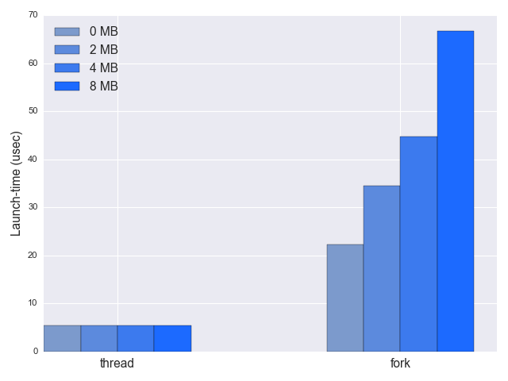

Due to variation between operating systems and the way OS courses are taught, some programmers may have an outdated mental model about the difference between processes and threads in Linux. Even the name "thread" suggests something extremely lightweight compared to a heavy "process" - a mostly wrong intuition.
In fact, for the Linux kernel itself there's absolutely no difference between what userspace sees as processes (the result of fork) and as threads (the result of pthread_create). Both are represented by the same data structures and scheduled similarly. In kernel nomenclature this is called tasks (the main structure representing a task in the kernel is task_struct), and I'll be using this term from now on.
In Linux, threads are just tasks that share some resources, most notably their memory space; processes, on the other hand, are tasks that don't share resources. For application programmers, proceses and threads are created and managed in very different ways. For processes there's a slew of process-management APIs like fork, wait and so on. For threads there's the pthread library. However, deep in the guts of these APIs and libraries, both processes and threads come into existence through a single Linux system call - clone.
The clone system call
We can think of clone as the unifying implementation shared between processes and threads. Whatever perceived difference there is between processes and threads on Linux is achieved through passing different flags to clone. Therefore, it's most useful to think of processes and threads not as two completely different concepts, but rather as two variants of the same concept - starting a concurrent task. The differences are mostly about what is shared between this new task and the task that started it.
Here is a code sample demonstrating the most important sharing aspect of threads - memory. It uses clone in two ways, once with the CLONE_VM flag and once without. CLONE_VM tells clone to share the virtual memory between the calling task and the new task clone is about to create [1]. As we'll see later on, this is the flag used by pthread_create:
static int child_func(void* arg) {
char* buf = (char*)arg;
printf("Child sees buf = \"%s\"\n", buf);
strcpy(buf, "hello from child");
return 0;
}
int main(int argc, char** argv) {
// Allocate stack for child task.
const int STACK_SIZE = 65536;
char* stack = malloc(STACK_SIZE);
if (!stack) {
perror("malloc");
exit(1);
}
// When called with the command-line argument "vm", set the CLONE_VM flag on.
unsigned long flags = 0;
if (argc > 1 && !strcmp(argv[1], "vm")) {
flags |= CLONE_VM;
}
char buf[100];
strcpy(buf, "hello from parent");
if (clone(child_func, stack + STACK_SIZE, flags | SIGCHLD, buf) == -1) {
perror("clone");
exit(1);
}
int status;
if (wait(&status) == -1) {
perror("wait");
exit(1);
}
printf("Child exited with status %d. buf = \"%s\"\n", status, buf);
return 0;
}
Some things to note when clone is invoked:
- It takes a function pointer to the code the new task will run, similarly to threading APIs, and unlike the fork API. This is the glibc wrapper for clone. There's also a raw system call which is discussed below.
- The stack for the new task has to be allocated by the parent and passed into clone.
- The SIGCHLD flag tells the kernel to send the SIGCHLD to the parent when the child terminates, which lets the parent use the plain wait call to wait for the child to exit. This is the only flag the sample passes into clone by default.
This code sample passes a buffer into the child, and the child writes a string into it. When called without the vm command-line argument, the CLONE_VM flag is off, and the parent's virtual memory is copied into the child. The child sees the message the parent placed in buf, but whatever it writes into buf goes into its own copy and the parent can't see it. Here's the output:
$ ./clone-vm-sample
Child sees buf = "hello from parent"
Child exited with status 0. buf = "hello from parent"
But when the vm argument is passed, CLONE_VM is set and the child task shares the parent's memory. Its writing into buf will now be observable from the parent:
$ ./clone-vm-sample vm
Child sees buf = "hello from parent"
Child exited with status 0. buf = "hello from child"
A bunch of other CLONE_* flags can specify other things that will be shared with the parent: CLONE_FILES will share the open file descriptors, CLONE_SIGHAND will share the signal dispositions, and so on.
Other flags are there to implement the semantics required by POSIX threads. For example, CLONE_THREAD asks the kernel to assign the same thread group id to the child as to the parent, in order to comply with POSIX's requirement of all threads in a process sharing a single process ID [2].
Calling clone in process and thread creation
Let's dig through some code in glibc to see how clone is invoked, starting with fork, which is routed to __libc_fork in sysdeps/nptl/fork.c. The actual implementation is specific to the threading library, hence the location in the nptl folder. The first thing __libc_fork does is invoke the fork handlers potentially registered beforehead with pthread_atfork.
The actual cloning happens with:
pid = ARCH_FORK ();
Where ARCH_FORK is a macro defined per architecture (exact syscall ABIs are architecture-specific). For x86_64 it maps to:
#define ARCH_FORK() \
INLINE_SYSCALL (clone, 4, \
CLONE_CHILD_SETTID | CLONE_CHILD_CLEARTID | SIGCHLD, 0, \
NULL, &THREAD_SELF->tid)
The CLONE_CHILD_* flags are useful for some threading libraries (though not the default on Linux today - NPTL). Otherwise, the invocation is very similar to the clone code sample shown in the previous section.
You may wonder where is the function pointer in this call. Nice catch! This is the raw call version of clone, where execution continues from the point of the call in both parent and child - close to the usual semantics of fork.
Now let's turn to pthread_create. Through a dizzying chain of macros it reaches a function named create_thread (defined in sysdeps/unix/sysv/linux/createthread.c) that calls clone with:
const int clone_flags = (CLONE_VM | CLONE_FS | CLONE_FILES | CLONE_SYSVSEM
| CLONE_SIGHAND | CLONE_THREAD
| CLONE_SETTLS | CLONE_PARENT_SETTID
| CLONE_CHILD_CLEARTID
| 0);
ARCH_CLONE (&start_thread, STACK_VARIABLES_ARGS,
clone_flags, pd, &pd->tid, tp, &pd->tid)
Browse through man 2 clone to understand the flags passed into the call. Briefly, it is asked to share the virtual memory, file system, open files, shared memory and signal handlers with the parent thread/process. Additional flags are passed to implement proper identification - all threads launched from a single process have to share its process ID to be POSIX compliant.
Reading the glibc source code is quite an exercise in mental resilience, but it's really interesting to see how everything fits together "in the real world".
Benchmarking process vs. thread creation
Given the information presented earlier in the post, I would expect process creation to be somewhat more expensive than thread creation, but not dramatically so. Since fork and pthread_create route to the same system call in Linux, the difference would come from the different flags they pass in. When pthread_create passes all these CLONE_* flags, it tells the kernel there's no need to copy the virtual memory image, the open files, the signal handlers, and so on. Obviously, this saves time.
For processes, there's a bit of copying to be done when fork is invoked, which costs time. The biggest chunk of time probably goes to copying the memory image due to the lack of CLONE_VM. Note, however, that it's not just copying the whole memory; Linux has an important optimization by using COW (Copy On Write) pages. The child's memory pages are initially mapped to the same pages shared by the parent, and only when we modify them the copy happens. This is very important because processes will often use a lot of shared read-only memory (think of the global structures used by the standard library, for example).
That said, the page tables still have to be copied. The size of a process's page tables can be observed by looking in /proc/<pid>/status - the VmPTE indicator. These can be around tens of kilobytes for small processes, and higher for larger processes. Not a lot of data to copy, but definitely some extra work for the CPU.
I wrote a benchmark that times process and threads launches, as a function of the virtual memory allocated before fork or pthread_create. The launch is averaged over 10,000 instances to remove warm-up effects and jitter:
Several things to note:
- Indeed, launching processes is slower than threads, 35 vs. 5 microseconds for a 2-MB heap. But it's still very fast! 35 micro-seconds is not a lot of time at all. If your latency budget is willing to tolerate a 5 us overhead, it will almost certainly be fine with a 35 us overhead, unless you're working on some super-tight hard realtime system (in which case you shouldn't be using Linux!)
- As expected, the time to launch a process when the heap is larger grows. The time delta is the time needed to copy the extra page table entries. For threads, on the other hand, there is absolutely no difference since the memory is completely shared.
Interestingly, it's easy to observe from these numbers that not the whole memory image is being copied. On the same machine this benchmark was run on, just a simple memcpy of 2 MB takes over 60 us, so it couldn't have copied 2 MB of heap to the child in the 30 us difference. Copying 64K (a reasonable size for a page table) takes 3 us, which makes sense because the cloning involves more than a simple memcpy. To me this is another sign of how fast these launches are, since we're in the same ballpark of performance with modestly sized memory copies.
Creation time is not the only performance benchmark of importance. It's also interesting to measure how long it takes to switch context between tasks when using threads or processes. This is covered in another post.
| [1] | It may be just me, but I find this terminology a bit confusing. In my mind the word clone is synonymous to copy, so when we turn on a flag named "clone the VM" I'd expect the VM to be copied rather than shared. IMHO it would be clearer if this flag was named SHARE_VM. |
| [2] | It's certainly interesting to see this evolution of concepts over time. Thread APIs were defined in times where there was a real difference between processes and threads and their design reflects that. In modern Linux the kernel has to bend over backwards to provide the illusion of the difference although very little of it exists. |